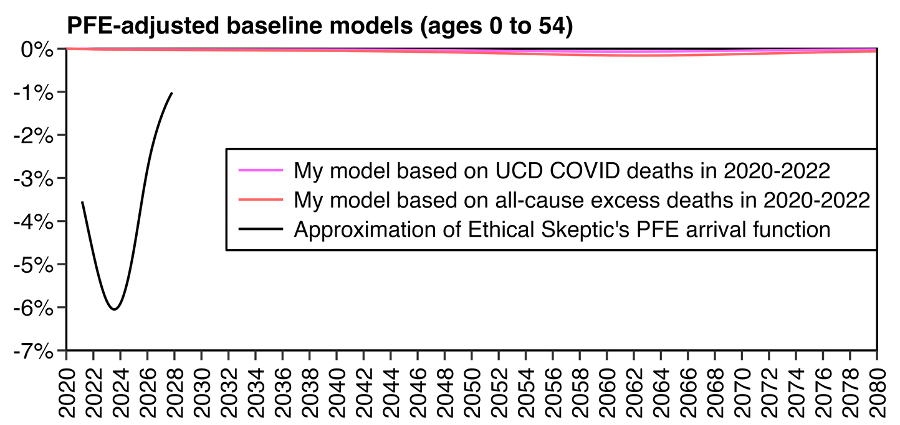
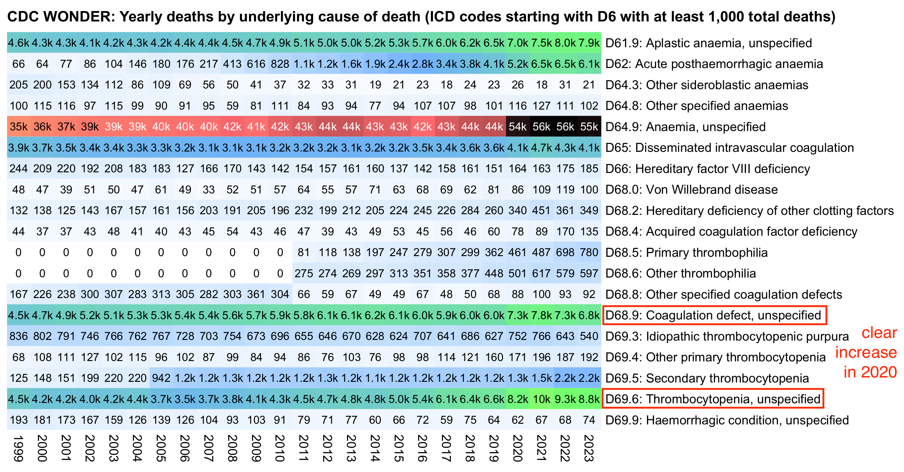
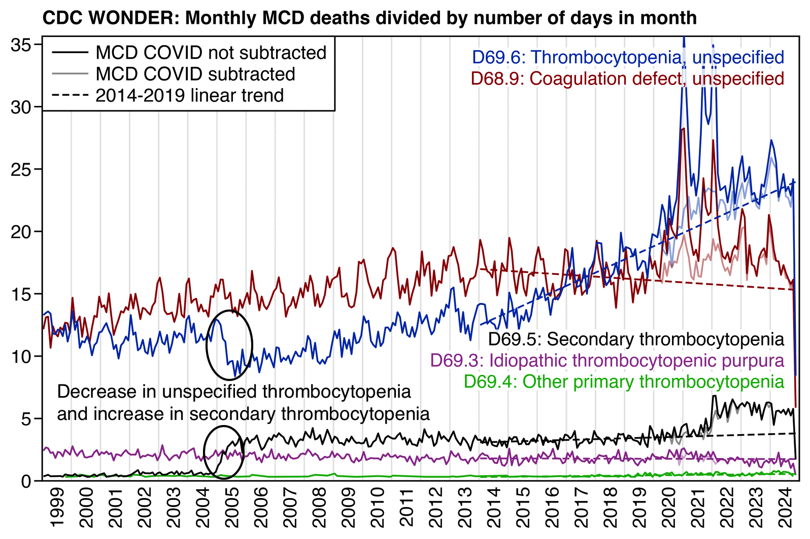
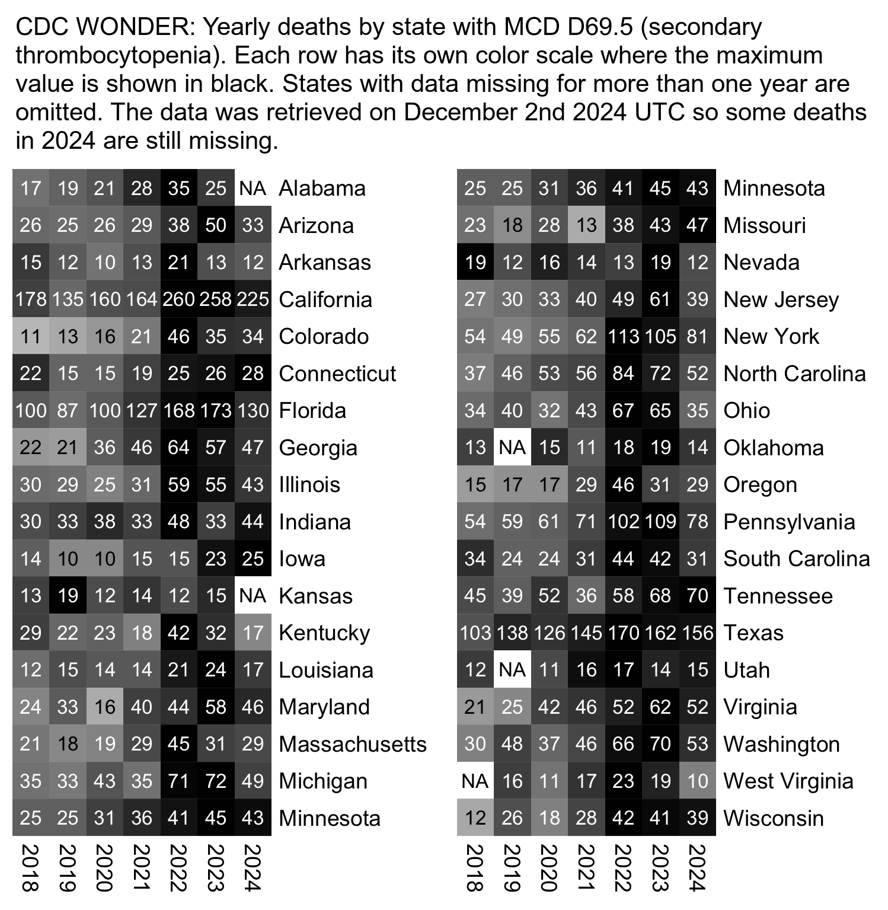
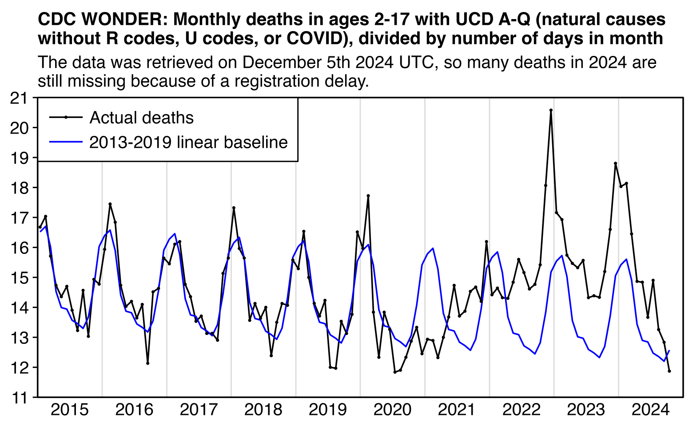
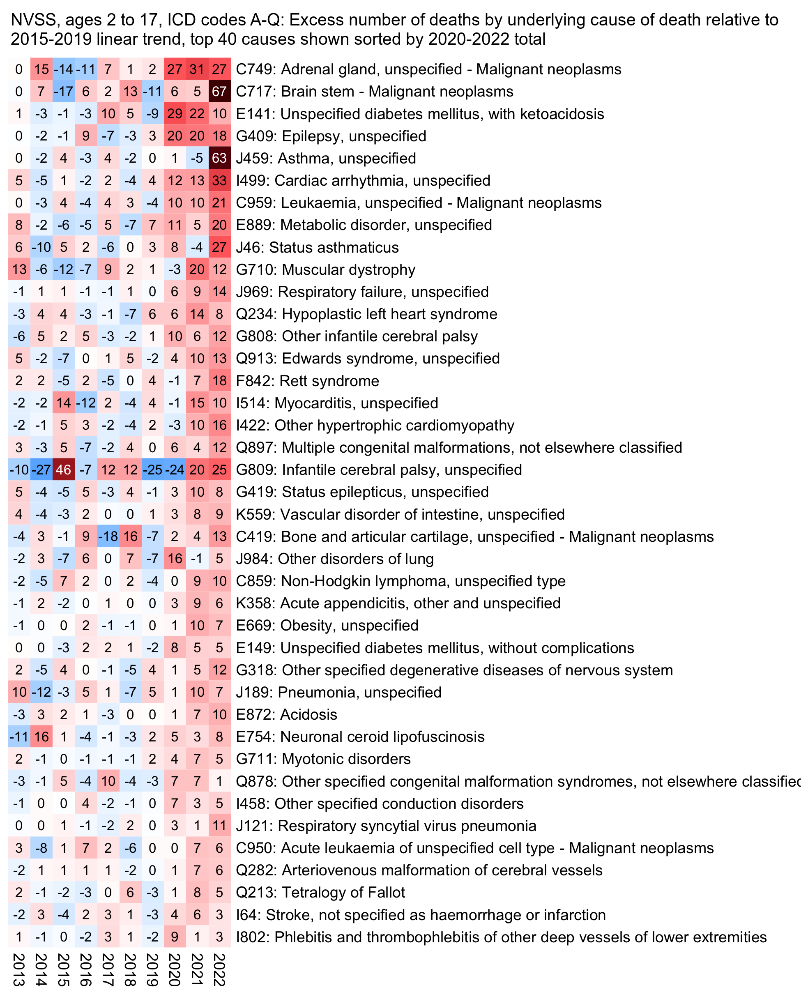
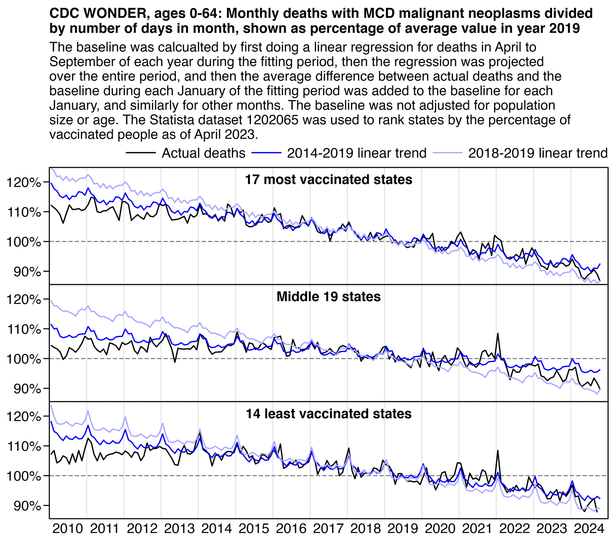
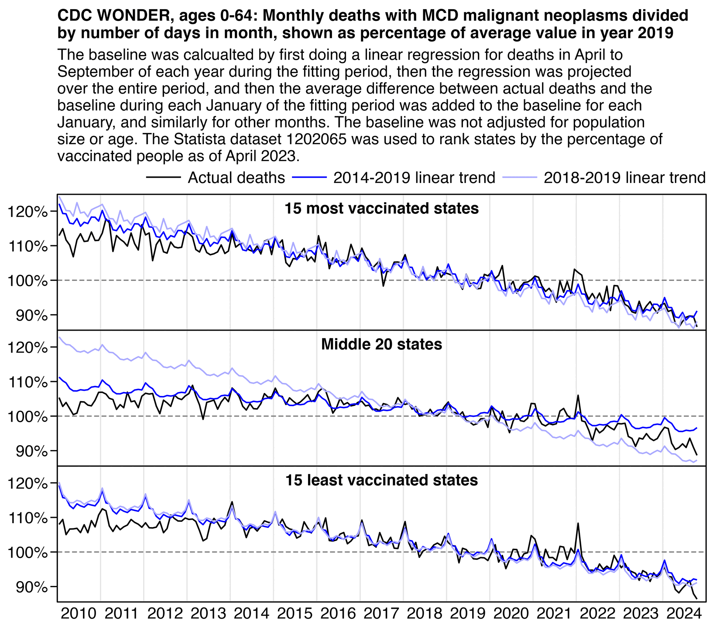

Part 1 is here: ethical.html.
Jeffrey Morris posted this plot by Truth in Numbers where the ASMR in 2024 was below the 2018-2019 average baseline: [https://x.com/jsm2334/status/1859343221677068406]
Ethical Skeptic posted this tweet in response, where he got about 7.1% excess deaths in 2024: [https://x.com/EthicalSkeptic/status/1859361344975159394]
From practitioner experience:
1. Regression is applied to stable troughs, not all data points, which may include volatile isolated surges - otherwise it is Gaussian blindness paltering (using a dishonest baseline).
2. If 1.6 million EXCESS old persons die over a couple years, you must lower the anticipated death rate in subsequent years, or you are doing torfuscation (hiding the dead bodies).
Both are dishonest and/or incompetent.
In the plot by Truth in Numbers, the average ASMR on weeks 40 of 2018 and 2019 was drawn as a baseline, but if he would've used a prepandemic linear regression as the baseline then he might have gotten positive excess ASMR in 2024. He used 2010-based population estimates for 2018 to 2020 and 2020-based population estimates for 2021 onwards, which exaggerated his ASMR in 2024 relative to 2018 and 2019, because the population sizes of the oldest age groups dropped dramatically between the 2010-based and 2020-based population estimates:

library(data.table);library(ggplot2)
agecut=\(x,y)cut(x,c(y,Inf),paste0(y,c(paste0("-",y[-1]-1),"+")),T,F)
kim=\(x)ifelse(x>=1e3,ifelse(x>=1e6,paste0(x/1e6,"M"),paste0(x/1e3,"k")),x)
new=fread("https://www2.census.gov/programs-surveys/popest/datasets/2020-2023/national/asrh/nc-est2023-agesex-res.csv")
old=fread("https://www2.census.gov/programs-surveys/popest/datasets/2010-2020/national/asrh/nc-est2020-agesex-res.csv")
old=old[SEX==0&AGE!=999,.(age=AGE,pop=unlist(.SD[,-(1:4)]),year=rep(2010:2020,each=.N))]
new=new[SEX==0&AGE!=999,.(age=AGE,pop=unlist(.SD[,-(1:3)]),year=rep(2020:2023,each=.N))]
older=fread("https://www2.census.gov/programs-surveys/popest/tables/2000-2010/intercensal/national/us-est00int-01.csv")
older=older[6:26,c(1,3:12,14)][,.(age=as.numeric(sub("\\D*(\\d+).*","\\1",sub("Under 5",0,V1))),pop=as.numeric(gsub(",","",unlist(.SD[,-1]))),year=rep(2000:2010,each=.N))]
oldest=fread("https://www2.census.gov/programs-surveys/popest/tables/2000-2009/national/asrh/nc-est2009-01.csv")
oldest=oldest[6:26,c(1,2:11)][,.(age=as.numeric(sub("\\D*(\\d+).*","\\1",sub("Under 5",0,V1))),pop=as.numeric(gsub(",","",unlist(.SD[,-1]))),year=rep(2009:2000,each=.N))]
mult=merge(old[year==2020],new[year==2020,.(age,new=pop)])[,.(ratio=new/pop,age)]
mult=merge(old,mult)[,mult:=(year-2010)/10]
mult=mult[,.(age,year,pop=((1-mult)*1+mult*ratio)*pop)]
won=fread("http://sars2.net/f/wondercanceryearlysingle.csv")[age<85,.(year,pop,age)]
won=rbind(won,fread("http://sars2.net/f/wondercanceryearlyten.csv")[cause==cause[1]&age==85,.(year,pop,age)])
p=cbind(oldest,z="2000-2009")
p=rbind(p,cbind(older,z="2000-2010 intercensal"))
p=rbind(p,cbind(old,z="2010-2020"))
p=rbind(p,cbind(mult,z="2010-2020 multiplied by linear slope"))
p=rbind(p,cbind(new,z="2020-2023"))
p=rbind(p,cbind(won,z="CDC WONDER"))
p[,z:=factor(z,unique(z))]
ages=0:4*20
ages=c(0,25,45,65,75,85)
p=p[,.(pop=sum(pop)),.(z,year,age=agecut(age,ages))]
xstart=2000;xend=2023
p=p[year%in%xstart:xend]
ggplot(p,aes(x=year,y=pop))+
coord_cartesian(clip="off")+
facet_wrap(~age,ncol=2,dir="v",scales="free_y")+
geom_vline(xintercept=c(2009.5,2019.5),color="gray80",linewidth=.23)+
geom_line(aes(color=z,alpha=z),linewidth=.3)+
geom_point(aes(color=z,shape=z,size=z),stroke=.3)+
geom_text(fontface=2,data=p[,max(pop),age],aes(label=paste0("\n ",age," \n"),y=V1),x=xstart-.5,lineheight=.4,hjust=0,vjust=1,size=grid::convertUnit(unit(7,"pt"),"mm"))+
labs(title="Mid-year US resident population estimates by age group",subtitle="Source: www2.census.gov/programs-surveys/popest/datasets and CDC WONDER.",x=NULL,y=NULL)+
scale_x_continuous(limits=c(xstart-.5,xend+.5),breaks=seq(xstart-.5,xend+.5,.5),labels=c(rbind("",ifelse(xstart:xend%%2==0,xstart:xend,"")),""),expand=expansion(0))+
scale_y_continuous(labels=kim,breaks=\(x)Filter(\(y)y>min(x)+(max(x)-min(x))*.05,pretty(x,4)),expand=expansion(.04))+
scale_color_manual(values=c("#0055ff","#8844ff","#ff55ff","gray50","#ff5555","black"))+
scale_shape_manual(values=c(16,16,16,16,16,4))+
scale_alpha_manual(values=c(1,1,1,1,1,0))+
scale_size_manual(values=c(.7,.7,.7,.7,.7,1))+
guides(color=guide_legend(ncol=2,byrow=F))+
theme(axis.text=element_text(size=7,color="black"),
axis.text.x=element_text(angle=90,vjust=.5,hjust=1),
axis.ticks=element_line(linewidth=.2,color="black"),
axis.ticks.length=unit(3,"pt"),
axis.ticks.length.x=unit(0,"pt"),
legend.background=element_blank(),
legend.box.spacing=unit(0,"pt"),
legend.justification="left",
legend.key=element_blank(),
legend.key.height=unit(8,"pt"),
legend.key.width=unit(17,"pt"),
legend.margin=margin(-2,,4),
legend.position="top",
legend.spacing.x=unit(2,"pt"),
legend.spacing.y=unit(1,"pt"),
legend.text=element_text(size=7,vjust=.5),
legend.title=element_blank(),
panel.background=element_blank(),
panel.border=element_rect(fill=NA,linewidth=.23),
panel.spacing.x=unit(3,"pt"),
panel.spacing.y=unit(3,"pt"),
plot.margin=margin(5,5,5,5),
plot.subtitle=element_text(size=6.9,margin=margin(,,4)),
plot.title=element_text(size=7.4,face=2,margin=margin(1,,3)),
strip.background=element_blank(),
strip.text=element_blank())
ggsave("1.png",width=4,height=3,dpi=350*4)
system("magick 1.png -resize 25% 1.png")
In the next plot I adjusted the 2010-2020 population estimates using the same method as in the gray lines in my plot above. It reduced my total excess ASMR in 2024 from about 1.0% to about -4.6%:

library(data.table);library(ggplot2)
url="https://www2.census.gov/programs-surveys/popest/datasets/"
new=do.call(rbind,lapply(paste0(url,"2020-2023/national/asrh/nc-est2023-alldata-r-file0",1:8,".csv"),\(x)fread(x)))
old=do.call(rbind,lapply(paste0(url,"2010-2020/national/asrh/NC-EST2020-ALLDATA-R-File",sprintf("%02d",1:24),".csv"),\(x)fread(x)))
mult=new[YEAR==2020&MONTH==4.2,.(age=AGE,new=TOT_POP)]
mult=merge(mult,old[YEAR==2020&MONTH==4,.(age=AGE,old=TOT_POP)])[,.(mult=new/old,age)]
oldpop=old[YEAR!=2021&MONTH!=4.2&AGE!=999,.(year=YEAR,month=floor(MONTH),pop=TOT_POP,age=AGE)]
newpop=new[AGE!=999,.(year=YEAR,month=floor(MONTH),pop=TOT_POP,age=AGE)]
proj=fread("https://www2.census.gov/programs-surveys/popproj/datasets/2023/2023-popproj/np2023_d1_mid.csv")
proj=proj[SEX==0&ORIGIN==0&RACE==0&YEAR%in%2024:2025,.(x=c(7,19),age=rep(0:100,each=.N),pop=unlist(.SD[,-(1:5)]))]
proj=rbind(newpop[year==2023&month==12,.(x=0,pop,age)],proj)
newpop=rbind(newpop,proj[,spline(x,pop,xout=1:12),age][,.(age,year=2024,month=x,pop=y)])
oldmod=oldpop[!(year==2020&month>4)]
oldmod=merge(mult,oldmod[,.(year,month,pop,slope=seq(0,1,,.N)),age])
oldmod=oldmod[,.(age,year,month,pop=pop*(slope*mult+(1-slope)*1))]
a=cbind(rbind(oldpop[!(year==2020&month>=4)],newpop),group="Original unmodified population estimates")
a=rbind(a,cbind(rbind(oldmod[!(year==2020&month==4)],newpop),group="Population estimates based on 2010 census multiplied by linear slope"))
a=merge(a,fread("http://sars2.net/f/usdeadmonthly.csv")[!(year==2024&month>9)])
std=fread("https://www2.census.gov/programs-surveys/popest/datasets/2020-2023/national/asrh/nc-est2023-agesex-res.csv")
a=merge(std[SEX==0&AGE!=999,.(age=AGE,std=POPESTIMATE2020)][,std:=std/sum(std)],a)
a[,date:=as.Date(paste(year,month,1,sep="-"))]
a[,group:=factor(group,unique(group))]
a[,pop:=pop*lubridate::days_in_month(date)]
p=a[,.(asmr=sum(dead/pop*std*365e5)),.(date,group)]
p=merge(p[year(date)%in%2011:2019&month(date)%in%5:9,.(date=unique(p$date),base=predict(lm(asmr~date),.(date=unique(p$date)))),group],p)
p[,month:=month(date)]
p=merge(p[year(date)%in%2011:2019,.(monthly=mean(asmr-base)),month],p)
yearly=a[,.(pop=sum(pop),dead=sum(dead)),.(age,std,group,year=year(date))]
yearly=yearly[,.(asmr=sum(dead/pop*std*365e5)),.(year,group)]
yearly=merge(yearly[year%in%2011:2019,.(year=2011:2024,base=predict(lm(asmr~year),.(year=2011:2024))),group],yearly)
pct=yearly[,.(pct=(sum(asmr)/sum(base)-1)*100),.(year,group)][,x:=as.Date(paste0(year,"-7-1"))]
lab=c("Actual ASMR","2011-2019 linear baseline","Baseline adjusted for seasonality","Difference from seasonality-adjusted baseline")
p=p[,.(x=date,y=c(asmr,base,base+monthly,asmr-base-monthly),z=factor(rep(lab,each=.N),lab),group)]
pct=merge(p[,.(y=min(y)),group],pct)
xstart=as.Date("2017-1-1");xend=as.Date("2025-1-1")
xbreak=seq(xstart,xend,"6 month");xlab=ifelse(month(xbreak)==7,year(xbreak),"")
ggplot(p,aes(x=x+14,y))+
facet_wrap(~group,ncol=1,dir="v",scales="free")+
geom_vline(xintercept=seq(xstart,xend,"year"),color="gray85",linewidth=.25)+
geom_vline(xintercept=as.Date("2020-1-1"),linetype="44",linewidth=.3)+
geom_line(data=p[z!=lab[4]],aes(linetype=z,color=z),linewidth=.3)+
geom_line(data=p[z==z[1]],aes(linetype=z,color=z),linewidth=.3)+
geom_point(aes(alpha=z),stroke=0,size=.6)+
geom_rect(data=p[z==lab[4]],aes(xmin=x,xmax=x%m+%months(1),ymin=pmin(0,y),ymax=pmax(0,y),fill=z),linewidth=.1,color="gray40")+
geom_text(data=pct,aes(x,y=y,label=paste0(ifelse(pct>0,"+",""),sprintf("%.1f",pct),"%")),vjust=.8,size=2.4)+
labs(title="Age-standardized mortality rate per 100,000 person-years in United States",x=NULL,y=NULL)+
scale_x_continuous(expand=c(0,0),limits=c(xstart,xend),breaks=xbreak,labels=xlab)+
scale_y_continuous(expand=c(.06,0,.03,0),breaks=\(x)pretty(x,6))+
scale_color_manual(values=c("black","gray60","gray60","gray40"))+
scale_fill_manual(values=rep("gray60",4))+
scale_linetype_manual(values=c("solid","42","solid","solid"))+
scale_alpha_manual(values=c(1,0,0,0),guide="none")+
guides(fill=guide_legend(order=3,keyheight=unit(1,"pt")),color=guide_legend(order=1),linetype=guide_legend(order=1))+
coord_cartesian(clip="off")+
theme(axis.text=element_text(size=7,color="black"),
axis.ticks.x=element_line(color=alpha("black",c(1,0))),
axis.ticks=element_line(linewidth=.3,color="black"),
axis.ticks.length=unit(3,"pt"),
axis.ticks.length.x=unit(0,"pt"),
axis.title=element_text(size=8),
legend.background=element_blank(),
legend.key=element_blank(),
legend.key.height=unit(9,"pt"),
legend.key.width=unit(19,"pt"),
legend.position="top",
legend.justification="left",
legend.spacing.x=unit(2,"pt"),
legend.box.margin=margin(),
legend.spacing.y=unit(0,"pt"),
legend.margin=margin(,,2),
legend.text=element_text(size=7,vjust=.5),
legend.title=element_blank(),
legend.direction="vertical",
legend.box="horizontal",
legend.box.spacing=unit(0,"pt"),
legend.spacing=unit(0,"pt"),
panel.background=element_blank(),
panel.border=element_rect(fill=NA,linewidth=.3),
panel.spacing.y=unit(2,"pt"),
plot.margin=margin(4,4,2,4),
plot.subtitle=element_text(size=6.5,margin=margin(,,4)),
plot.title=element_text(size=7.4,face=2,margin=margin(1,,3)),
strip.background=element_blank(),
strip.text=element_text(size=7,face=2,margin=margin(,,2)))
ggsave("1.png",width=4.7,height=3.9,dpi=400*4)
sub="\u00a0 The data for deaths was retrieved from CDC WONDER on November 21st 2024 UTC, so some deaths are still missing in 2024 because of a registration delay.
The yearly total excess mortality percentage is shown above the year.
ASMR was calculated by single year of age so that the vintage 2023 mid-2020 resident population estimates were used as the standard population.
The baseline was calculated by doing a linear regression for monthly data in 2011 to 2019. Only May to September were included in the linear regression. In order to calculate the seasonality-adjusted baseline, the average difference between the actual ASMR and baseline during each January of 2011 to 2019 was added to the baseline for each January, and similarly for other months.
Monthly resident population estimates by single year of age were downloaded from www2.census.
gov/programs-surveys/popest/datasets/2020-2023/national/asrh/nc-est2023-alldata-r-file0{1..8}.csv, and from the corresponding files in the 2010-2020 directory.
Vintage 2023 population estimates based on the 2020 census are used for April 2020 to December 2023, and vintage 2020 population estimates based on the 2010 census are used for January 2011 to March 2020. In the bottom panel the 2010-based estimates were multiplied by a linear slope so that they were equal to the 2020-based estimates in April 2020 when the two sets of estimates were merged. The 2010-based estimates cover a total of 121 months from April 2010 until April 2020, and for example for the age 80 the ratio between the 2020-based and 2010-based estimates was about 0.946 in April 2020, so the population estimate for age 80 was multiplied by about 1/121*0.946+120/121 in May 2010, by about 2/121*0.946+119/121 in June 2010, and so on. A similar method is used in the Census Bureau's intercensal population estimates, but intercensal estimates for 2010-2020 have not yet been published.
Monthly population estimates for 2024 were calculated as a spline interpolation of the population estimate on December 2023 and mid-year population projections for 2024 and 2025: www2.census.gov/programs-surveys/popproj/datasets/2023/2023-popproj/np2023_d1_mid.csv."
system(paste0("mar=120;w=`identify -format %w 1.png`;magick 1.png \\( -size $[w-mar*2]x -font Arial -interline-spacing -4 -pointsize 152 caption:'",gsub("'","'\\\\''",sub),"' -gravity southwest -splice $[mar]x70 \\) -append -resize 25% -colorspace gray -colors 16 1.png"))
Ethical Skeptic would probably complain that in the plot above I didn't adjust my baseline for PFE. But I used ASMR which accounts for the reduction in population size due to COVID deaths. And Ethical Skeptic should not only adjust his baseline downwards to account for mortality displacement, but he should also adjust his baseline upwards to account for the changing age structure of the population. Ethical Skeptic seems to apply some kind of subjective judgment to determine the shape and magnitude of his so-called PFE arrival function, and I believe he hasn't published any code or methodology that would allow other people to reproduce his PFE-adjusted baseline exactly. But in contrast ASMR is easy to calculate objectively in a way that different authors end up getting identical results.
USMortality implemented the same method I used above to adjust the 2010-based population estimates at Mortality Watch, after which he now also gets negative excess mortality for the United States in 2024: [https://x.com/USMortality/status/1856489943519920218]

In the plot above USMortality used a 2017-2019 average baseline, but even when I changed the baseline to a 2011-2019 linear regression, I still got negative excess ASMR during each of the first three quarters of 2024: [https://www.mortality.watch/explorer/?c=USA&ct=quarterly&df=2018%2520Q1&bf=2011%2520Q1&bm=lin_reg]

Ethical Skeptic wrote: "The function we currently use for PFE is described by 6.6 years (345 weeks - April 2021 - Oct 2027) of Chi-squared arrival, with an anticipated x_mode (function peak) of mid-late 2023 at 6.02% of Excess Non-Covid Natural Cause Mortality." [https://theethicalskeptic.com/2024/11/20/the-state-of-things-pandemic/] And he linked this image:

Ethical Skeptic came up with the figure of 6.6 years because he said the average age of COVID deaths in Florida was 82, and he got a life expectancy of 6.6 years for age 82: [https://theethicalskeptic.com/2024/11/20/the-state-of-things-pandemic/]

He got the life expectancy of 6.6 years based on the life expectancy for males listed at seniorliving.com (even though the life expectancy for females of age 82 was listed as 8.8 on the same website so I don't know why he didn't even take the average value of both sexes, and in the 2019 US life table the life expectancy for both sexes combined is about 8.2 years at age 82): [https://www.seniorliving.org/research/life-expectancy/calculator/]

At CDC WONDER the average age of UCD COVID deaths was 73.8 in Florida and about 73.9 in the whole US. And in the 2019 life table the life expectancy for age 74 is about 13.1 years, so it's about twice as high as Ethical Skeptic's figure of 6.6 years. And when I calculated the average of life expectancies for each age weighted by the number of COVID deaths for each age, it was about 14.5 years:
# 2019 life table for both sexes combined
download.file("https://ftp.cdc.gov/pub/Health_Statistics/NCHS/Publications/NVSR/70-19/Table01.xlsx","Table01.xlsx")
ex=read_excel("Table01.xlsx",skip=2,n_max=101)$ex
# UCD COVID deaths by single year of age from CDC WONDER (last value is age 100 and above)
coviddead=c(363,116,46,41,39,30,38,32,33,47,40,35,41,56,51,97,88,130,162,210,255,288,367,407,499,530,620,707,819,979,1112,1255,1329,1441,1607,1703,1850,2066,2237,2502,2713,2987,3253,3486,3942,4197,4610,4912,5686,6278,7075,7365,8017,8227,8942,9822,11084,11748,12866,14070,15174,16061,17259,18347,19229,20037,20443,20874,22012,22623,23586,24446,25783,27417,27760,26024,26237,27531,28188,27690,27437,27093,27200,27223,26753,26849,26190,25121,24827,24104,22756,21336,19309,17787,15069,12656,10416,8337,6321,4626,8773)
weighted.mean(ex,coviddead) # 14.50457
The following code shows the average life expectancy by month of death for deaths with UCD COVID. I now calculated the life expectancy separately for males and females even though it didn't make much difference. CDC WONDER suppresses the number of deaths on rows with less than 10 deaths, so I got the number of COVID deaths from the fixed-width files for the NVSS data instead: stat.html#Download_fixed_width_and_CSV_files_for_the_NVSS_data_used_at_CDC_WONDER. The life expectancy was unsurprisingly much higher in 2021 than 2020 (which is because the percentage of COVID deaths in 2021 relative to 2020 is much higher in working-age people than in elderly people, which might be because in 2021 working-age people were less likely to be vaccinated than elderly people):
dlf=\(x,y=sub(".*/","",x),...)for(i in 1:length(x))download.file(x[i],y[i],quiet=T,...)
dlf(paste0("https://ftp.cdc.gov/pub/Health_Statistics/NCHS/Publications/NVSR/70-19/Table0",2:3,".xlsx"))
ex=data.table(age=0:100,sex=rep(c("M","F"),each=101))
ex$ex=c(sapply(2:3,\(i)read_excel(paste0("Table0",i,".xlsx"),skip=2,n_max=101)$ex))
t=do.call(rbind,lapply(2020:2022,\(x)fread(paste0(x,".csv.gz"))))
a=t[restatus!=4&age!=9999&ucod=="U071",.N,.(year,month=monthdth,sex,age=pmin(100,ifelse(age<2000,age-1000,0)))]
merge(ex,a)[,weighted.mean(ex,N),.(year,month)][,xtabs(round(V1)~year+month)]
# month
# year 1 2 3 4 5 6 7 8 9 10 11 12
# 2020 18 19 15 13 12 14 15 14 13 12 12 12
# 2021 13 14 15 17 18 18 19 19 19 18 17 17
# 2022 15 14 14 14 12 12 12 12 11 11 11 11
In the next plot I simulated two scenarios, where in both scenarios the population started out as one tenth of the mid-2018 US resident population estimates. In both scenarios I calculated the monthly mortality rates for each age by doing a projection of the linear trend in the mortality rate in 2011-2019, except in the red scenario I emulated the pattern of COVID deaths in 2020-2021 by multiplying the mortality rate for each combination of age and month by the ratio between the actual and seasonality-adjusted projection of the mortality rate for the same combination of age and month. I didn't emulate seasonality to make the difference between the two scenarios easier to see. But the COVID scenario got only about 1.5% less deaths in 2023-2024 than the scenario without the COVID event:

library(data.table);library(ggplot2)
t=fread("http://sars2.net/f/uspopdeadmonthly.csv")[year%in%2011:2024]
t[,date:=as.integer(factor(date))-84][,cmr:=dead/persondays]
t=merge(t,t[year<2020,.(date=unique(t$date),base=predict(lm(cmr~date),.(date=unique(t$date)))),age])
t=merge(t[year<2020,.(monthly=mean(cmr/base)),.(month,age)],t)
rate=t[date>0,.(base=base*365/12,mult=ifelse(date%in%25:48,cmr/(base*monthly),1)),,.(date,age)]
set.seed(0)
pop=fread("http://sars2.net/f/uspopdead.csv")[year==2020]
people=pop[age>0,rep(age,pop/10)];people=people2=people+runif(length(people))
sim=data.table(month=1:84,dead=0,dead2=0)
set.seed(0)
for(i in 1:nrow(sim)){
died=runif(length(people))<rate[date==i,base*mult][people]
people=pmin(100,people[!died]+1/12)
sim$dead[i]=sum(died)
print(i)
}
set.seed(0)
for(i in 1:nrow(sim)){
died=runif(length(people2))<rate[date==i,base][people2]
people2=pmin(100,people2[!died]+1/12)
sim$dead2[i]=sum(died)
print(i)
}
sim$base=sim[month<25,predict(lm(dead~month),sim)]
lab=c("With elevated mortality in 2020-2021","No elevated mortality in 2020-2021","2018-2019 linear trend")
p=melt(sim,id=1)[,.(x=month,y=value,z=`levels<-`(variable,lab))]
sum=sim[month%in%25:48,colSums(.SD)];sum2=sim[month>48,colSums(.SD)]
note=stringr::str_wrap(sprintf("The scenario with elevated mortality in 2020-2021 has %.1f%% more deaths in 2020-2021 and %.1f%% less deaths in 2022-2024.",(sum[2]/sum[3]-1)*100,(sum2[3]/sum2[2]-1)*100),32)
xstart=1;xend=nrow(sim)+1;xbreak=seq(xstart,xend,6);xlab=c(rbind("",2018:2024),"")
ybreak=pretty(c(0,p$y),8);ystart=0;yend=max(p$y)+.02
ggplot(p,aes(x+.5,y))+
geom_vline(xintercept=seq(xstart,xend,12),linewidth=.3,color="gray83",lineend="square")+
geom_hline(yintercept=c(ystart,yend),linewidth=.3,lineend="square")+
geom_vline(xintercept=c(xstart,xend),linewidth=.3,lineend="square")+
geom_line(aes(color=z,linetype=z),linewidth=.35)+
geom_point(aes(color=z,alpha=z),stroke=0,size=.7)+
labs(title="Simulation for deaths per month in one tenth of US population",x=NULL,y=NULL)+
annotate(geom="label",x=42,y=yend*.48,label=note,hjust=0,label.r=unit(2,"pt"),label.padding=unit(3,"pt"),label.size=.2,size=2.4,lineheight=.9)+
scale_x_continuous(limits=c(xstart,xend),breaks=xbreak,labels=xlab)+
scale_y_continuous(limits=c(ystart,yend),breaks=ybreak)+
scale_color_manual(values=c("#ff6666","black","gray60"))+
scale_alpha_manual(values=c(1,1,0))+
scale_linetype_manual(values=c("solid","solid","42"))+
coord_cartesian(clip="off",expand=F)+
theme(axis.text=element_text(size=7,color="black"),
axis.ticks=element_line(linewidth=.3),
axis.ticks.length=unit(3,"pt"),
axis.ticks.length.x=unit(0,"pt"),
legend.direction="vertical",
legend.justification=c(0,0),
legend.key=element_blank(),
legend.key.height=unit(9,"pt"),
legend.key.width=unit(20,"pt"),
legend.background=element_rect(color="black",linewidth=.3),
legend.margin=margin(3,3,3,3),
legend.position=c(0,0),
legend.spacing.x=unit(1.5,"pt"),
legend.spacing.y=unit(0,"pt"),
legend.text=element_text(size=7),
legend.title=element_blank(),
panel.background=element_blank(),
plot.margin=margin(4,4,2,4),
plot.title=element_text(size=7.5,face="bold",margin=margin(1,,3)))
ggsave("1.png",width=3.7,height=2,dpi=380*4)
sub=paste0("The initial population for each age was one tenth of the mid-2018 US resident population estimates except infants of age zero were excluded, so the total initial population size was about 32 million people. The projection of a linear trend for CMR in 2011-2019 was used for each age throughout the simulation, except in the red scenario the mortality rate for each combination of month and age in 2020-2021 was multiplied by the ratio between the actual CMR for the age during the month and a seasonality-adjusted trend for CMR during the same month.")
sub=paste0(sub," The length of each month is 1/12 years. Births are not simulated. Seasonal variation in mortality or differences in the health of people were not simulated. The same seed was used for both scenarios so the scenarios are identical in 2018 and 2019.")
system(paste0("mar=120;w=`identify -format %w 1.png`;magick 1.png \\( -size $[w-mar*2]x -font Arial -interline-spacing -4 -pointsize 146 caption:'",gsub("'","'\\'",sub),"' -gravity southwest -splice $[mar]x70 \\) -append -resize 25% -colors 256 1.png"))
In the red scenario in the plot above, the number of deaths in 2024 was about 0.2% higher than the gray 2018-2019 baseline in 2024. In many of his plots Ethical Skeptic fits his baseline against deaths from 2018 and 2019 only, but the long-term trend in the raw number of deaths is curved upwards due to the aging population, so in addition to adjusting his baseline downwards to account for the PFE, he should also adjust the baseline upwards to account for the change to the age structure. But by 2024 the two adjustments should roughly cancel each other out based on my simulation above (even though Ethical Skeptic assumes that people with poor health relative to their age have been overrepresented among the people who have died in excess since 2020, which might justify an additional downwards shift of the baseline that was not considered in my simulation).
In the next plot I calculated a PFE adjustment factor based on the number of UCD COVID deaths in 2020-2022. I got the number of deaths with UCD COVID by age and month from the fixed-width files for the NVSS data to avoid the suppression of deaths at CDC WONDER: stat.html#Download_fixed_width_and_CSV_files_for_the_NVSS_data_used_at_CDC_WONDER.
I converted the age in years at the time of death to an age in months by multiplying the age by 12 and adding 6. For the sake of simplicity each month had a duration of one twelfth of a year. I converted the yearly crude mortality rate for each age in 2019 to a risk of dying per month with the formula 1-(1-cmr)^(1/12). I extrapolated mortality risk for ages 100 to 120 on a log scale from the mortality risk for ages 90 to 99. Each month I determined the number of people who died by multiplying the number of people for each age in months with the mortality risk for the age in months. I also calculated a baseline model of how many people would've died each month in a population which started out as the mid-2019 resident population estimates for each age. And then I calculated the PFE adjustment percent as -monthly_deaths/baseline_deaths*100.
I also applied a similar model to all-cause excess deaths relative to a seasonality-adjusted linear baseline for each age in 2011-2019.
The maximum reduction to the baseline was only about 1.8% based on COVID deaths and about 2.2% based on all-cause deaths, so both were around one third of 6.02% which is the maximum reduction in a PFE adjustment curve that Ethical Skeptic posted on his blog:

library(data.table);library(ggplot2)
months=12*60;minage=0;maxage=Inf
covid=do.call(rbind,lapply(2020:2022,\(i)fread(paste0(i,".csv.gz"))[ucod=="U071"&restatus!=4,.(age,month=(year-2020)*12+monthdth)]))
covid=covid[age!=9999][,age:=ifelse(age<2000,age%%1000,0)][age>=minage&age<=maxage,.(pop=.N),.(month,age=age*12+6)]
pop=fread("http://sars2.net/f/uspopdead.csv")[year==2019]
risk=pop[age<100,.(age,risk=1-(1-dead/pop)^(1/12))]
risk=c(risk$risk,risk[age>=90,exp(predict(lm(log(risk)~age),.(age=100:120)))])
risk=spline(seq(6,,12,121),risk,xout=0:(121*12-1))$y
all=fread("http://sars2.net/f/uspopdeadmonthly.csv")[year%in%2011:2022]
all[,date:=(year-2020)*12+month][,cmr:=dead/persondays]
all=merge(all,all[year<2020,.(date=unique(all$date),base=predict(lm(cmr~date),.(date=unique(all$date)))),age])
all=merge(all[year<2020,.(monthly=mean(cmr/base)),.(month,age)],all)
allcause=all[age>=minage&age<=maxage&date%in%1:36,.(pop=sum(dead)-sum(base*persondays*monthly)),,.(age=age*12+6,month=date)]
dead0=double();cur=pop[age>=minage&age<=maxage,.(age=age*12+6,pop,month=1)]
for(i in 1:months){
died=cur[,risk[pmin(age+1,length(risk))]*pop]
dead0[i]=sum(died)
cur=cur[,.(month=i+1,age=age+1,pop=pop-died)][,.(pop=sum(pop)),.(month,age)]
}
dead1=double();prev=NULL
for(i in 1:months){
cur=rbind(prev,covid[month==i])[,.(pop=sum(pop)),.(month,age)]
died=cur[,risk[pmin(age+1,length(risk))]*pop]
dead1[i]=sum(died)
prev=cur[,.(month=i+1,age=age+1,pop=pop-died)]
}
dead2=double();prev=NULL
for(i in 1:months){
cur=rbind(prev,allcause[month==i])[,.(pop=sum(pop)),.(month,age)]
died=cur[,risk[pmin(age+1,length(risk))]*pop]
dead2[i]=sum(died)
prev=cur[,.(month=i+1,age=age+1,pop=pop-died)]
}
pfe=c(-3.5,-4.9,-5.9,-5.9,-4.7,-2.9,-1.7,-1)
pfe=spline(seq(1,351,50),pfe,xout=seq(1,351,1/7))
pfe=setDT(pfe)[,.(y=mean(y)),.(x=(x*7)%/%(365.25/12)+15)]
lab="My model based on UCD COVID deaths in 2020-2022"
lab=c(lab,"My model based on all-cause excess deaths in 2020-2022")
lab=c(lab,"Approximation of Ethical Skeptic's PFE arrival function")
p=data.table(x=1:months,y=-c(dead1,dead2)/dead0*100)
p[,z:=factor(rep(lab[1:2],each=.N/2),lab[1:2])]
p=rbind(p,pfe[,z:=lab[3]])
xstart=1;xend=months+1;xbreak=seq(xstart,xend,12*2);xlab=seq(2020,,2,length(xbreak))
ystart=floor(min(p$y));yend=0;ybreak=ystart:yend
ggplot(p,aes(x,y))+
geom_hline(yintercept=c(ystart,yend),linewidth=.3,lineend="square")+
geom_vline(xintercept=c(xstart,xend),linewidth=.3,lineend="square")+
geom_line(aes(color=z),linewidth=.35)+
labs(title="PFE-adjusted baseline models",x=NULL,y=NULL)+
scale_x_continuous(limits=c(xstart,xend),breaks=xbreak,labels=xlab)+
scale_y_continuous(limits=c(ystart,yend),breaks=ybreak,labels=\(x)paste0(x,"%"))+
coord_cartesian(ylim=c(ystart,yend),clip="off",expand=F)+
scale_color_manual(values=c("#f6f","#f66","black"))+
theme(axis.text=element_text(size=7,color="black"),
axis.text.x=element_text(angle=90,vjust=.5,hjust=1),
axis.text.y=element_text(margin=margin(,1)),
axis.ticks=element_line(linewidth=.3),
axis.ticks.length.x=unit(3,"pt"),
legend.direction="vertical",
legend.justification=c(1,.5),
legend.key=element_blank(),
legend.key.height=unit(9,"pt"),
legend.key.width=unit(17,"pt"),
legend.background=element_rect(color="black",linewidth=.3),
legend.margin=margin(2,2,2,2),
legend.position=c(1,.5),
legend.spacing.x=unit(1.5,"pt"),
legend.spacing.y=unit(0,"pt"),
legend.text=element_text(size=6.8),
legend.title=element_blank(),
panel.background=element_blank(),
plot.margin=margin(4,7,2,4),
plot.title=element_text(size=7.3,face="bold",margin=margin(1,,3)))
ggsave("1.png",width=3.8,height=1.8,dpi=380*4)
system("magick 1.png -resize 25% -colors 256 1.png")
Here's a simplified version of my code that only calculates the red model that is based on all-cause deaths:
# monthly mortality risk by age in months for ages 0 to 120 (age 0 to 121*12-1 months)
# risk for ages 100-120 is extrapolated on a log scale from risk for ages 90-99
pop=fread("http://sars2.net/f/uspopdead.csv")[year==2019]
risk=pop[age<100,.(age,risk=1-(1-dead/pop)^(1/12))]
risk=c(risk$risk,risk[age>=90,exp(predict(lm(log(risk)~age),.(age=100:120)))])
risk=spline(seq(6,,12,121),risk,xout=0:(121*12-1))$y
# excess number of all-cause deaths by age and month in 2020-2022
# a seasonality-adjusted linear baseline for CMR in 2011-2019 is used for each age
# date 1 is January 2020 and date 36 is December 2022
all=fread("http://sars2.net/f/uspopdeadmonthly.csv")[year%in%2011:2022]
all[,date:=(year-2020)*12+month][,cmr:=dead/persondays]
dates=unique(all$date)
all=merge(all,all[year<2020,.(date=dates,base=predict(lm(cmr~date),.(date=dates))),age])
all=merge(all[year<2020,.(monthly=mean(cmr/base)),.(month,age)],all)
allcause=all[date%in%1:36,.(pop=sum(dead)-sum(base*persondays*monthly)),.(age,month=date)]
# baseline model
months=12*60
dead0=double();cur=pop[,.(age=age*12+6,pop,month=1)]
for(i in 1:months){
died=cur[,risk[pmin(age+1,length(risk))]*pop]
dead0[i]=sum(died)
cur=cur[,.(month=i+1,age=age+1,pop=pop-died)][,.(pop=sum(pop)),.(month,age)]
}
# model based on all-cause excess deaths
dead2=double();prev=NULL
for(i in 1:months){
cur=rbind(prev,allcause[month==i])[,.(pop=sum(pop)),.(month,age)]
died=cur[,risk[pmin(age+1,length(risk))]*pop]
dead2[i]=sum(died)
prev=cur[,.(month=i+1,age=age+1,pop=pop-died)]
}
# baseline reduction percent for PFE-adjusted baseline (month 1 is January 2020)
data.table(month=1:months,reductionpct=-dead2/dead0*100)
In November 2024 Ethical Skeptic said that he currently subtracts a total of 668,592 deaths from his PFE-adjusted baseline, even though my approximation of his PFE arrival function was based on this old plot where he only subtracted 587,000 deaths:
Ethical Skeptic's PFE adjustment is fully "expired" by October 2027 which means that after that point he will no longer subtract further deaths. But he said that in November 2024 his baseline was approximately 69% expired, which means that at that point he would've already subtracted about 69% of 668,592 deaths, which is about 460,000. However in the red line in my plot above I had only subtracted a total of only about 238,000 deaths by the end of November 2024, which is only about half of his figure.
Ethical Skeptic often applies heavy adjustment for the PFE even in plots for young age groups like 0-54. But in my plot below for ages 0-54, the maximum reduction to the baseline up to the end of 2024 was only about 0.013% in the model based on COVID deaths and about 0.028% in the model based on all-cause deaths:

Ethical Skeptic posted this tweet: [https://x.com/EthicalSkeptic/status/1862983630462554150]
USA Secondary Thrombocytopenia D69.5 MCoD All Ages
This leaves NO DOUBT as to cause. It was not Covid-19.
Thrombocytopenia means an abnormally low level of platelets in the blood. Primary thrombocytopenia can be caused by genetic disorders like Wiskott-Aldrich syndrome or by autoimmune disorders which destroy platelets, like idiopathic thrombocytopenic purpura (ITP). Secondary thrombocytopenia can be cause by viral or bacterial infections, chemotherapy, medications like heaprin, diseases like lupus, or bone marrow disorders like leukemia or aplastic anemia.
When I looked at UCD deaths instead of MCD deaths with MCD COVID subtracted, secondary thrombocytopenia didn't have a very clear increase in 2020 either, but there was a clear increase in 2020 for the related ICD codes D69.6 (thrombocytopenia, unspecified) and D68.9 (coagulation defect, unspecified):

library(data.table)
kimi=\(x){na=is.na(x);x[na]=0;e=floor(log10(ifelse(x==0,1,abs(x))));e2=pmax(e,0)%/%3+1;x[]=ifelse(abs(x)<1e3,round(x),paste0(sprintf(paste0("%.",ifelse(e%%3==0,1,0),"f"),x/1e3^(e2-1)),c("","k","M","B","T")[e2]));x[na]="NA";x}
t=fread("http://sars2.net/f/wonderbyicd.csv.gz")[type=="MCD"&year!=2024&code%like%"D6"]
t=t[code%in%t[,sum(dead),code][V1>=1000,code]]
t=t[order(code)]
t=t[,label:=paste0(code,": ",sub(" \\[.*","",cause))][,label:=factor(label,unique(label))]
m=t[,xtabs(dead~label+year)]
maxcolor=max(m);exp=.6
pal=hsv(c(21,21,12,6,3,0,0)/36,c(0,.5,.5,.5,.5,.5,0),rep(1:0,c(6,1)))
pheatmap::pheatmap(m^exp,filename="1.png",
display_numbers=ifelse(m<10,m,kimi(m)),
cluster_rows=F,cluster_cols=F,legend=F,cellwidth=17,cellheight=15,fontsize=9,fontsize_number=8,
border_color=NA,na_col="gray90",
number_color=ifelse(abs(m^exp)>maxcolor^exp*.8,"white","black"),
breaks=seq(0,maxcolor^exp,,256),
colorRampPalette(pal)(256))
system("w=`identify -format %w 1.png`;pad=20;magick -pointsize 44 -font Arial-Bold \\( -size $[w-pad] caption:'CDC WONDER: Yearly deaths by underlying cause of death (ICD codes starting with D6 with at least 1,000 total deaths)' -splice $[pad]x24 \\) 1.png -append 1.png")
However the plot above also shows that the number of D69.5 deaths increased about 5-fold between 2004 and 2005, so that there were about 100-200 deaths each year in 1999-2004, but from 2005 onwards there were about 1,000 deaths each year. So the increase between 2004 and 2005 was probably due to some change in coding practices, which might also explain the increase between 2021 and 2022.
The next plot shows that in the sharp increase in secondary thrombocytopenia in 2005 coincided with a sudden decrease in unspecified thrombocytopenia (D69.6):

library(data.table);library(ggplot2)
t=fread("http://sars2.net/f/wonderthrombocytopenia.csv")
t=t[,.(x=as.Date(paste(year,month,1,sep="-")),y=dead,z=factor(cause,unique(cause)),type)]
t[,y:=y/lubridate::days_in_month(x)]
p=rbind(t[type=="mcd"][,type:=1],dcast(t,z+x~type,value.var="y")[,.(z,x,type=2,y=mcd-nafill(and,,0))])
p=rbind(p,p[type==1&year(x)%in%2014:2019,{i=p[year(x)>=2014,x];.(x=i,y=predict(lm(y~x),.(x=i)),type=3)},z])
p[,type:=factor(type,,c("MCD COVID not subtracted","MCD COVID subtracted","2014-2019 linear trend"))]
xstart=as.Date("1999-1-1");xend=as.Date("2025-1-1")
xbreak=seq(xstart,xend,"6 month");xlab=ifelse(month(xbreak)==7,year(xbreak),"")
ybreak=pretty(p$y,6);ystart=0;yend=max(p$y)
lab=p[rowid(z)==1][order(z),.(z,x=xend-150,y=c(32.3,9.7,8,11.4,34))]
ggplot(p,aes(x+15,y))+
geom_vline(xintercept=seq(xstart,xend,"year"),color="gray90",linewidth=.25)+
geom_hline(yintercept=c(ystart,yend),linewidth=.25,lineend="square")+
geom_vline(xintercept=c(xstart,xend),linewidth=.25,lineend="square")+
geom_line(aes(y=ifelse(y<0,NA,y),color=z,alpha=type,linetype=type),linewidth=.3)+
geom_label(data=lab,aes(label=z,color=z,x=x),size=2.4,hjust=1,fill=alpha("white",.85),label.r=unit(0,"pt"),label.padding=unit(1,"pt"),label.size=0,show.legend=F)+
labs(title="CDC WONDER: Monthly MCD deaths divided by number of days in month",,x=NULL,y=NULL)+
scale_x_continuous(limits=c(xstart,xend),breaks=xbreak,labels=xlab)+
scale_y_continuous(limits=c(ystart,yend),breaks=ybreak)+
scale_color_manual(guide="none",values=c(hsv(0,1,.6),hsv(30/36,.6,.6),hsv(12/36,1,.7),"black",hsv(22/36,1,.7)))+
scale_alpha_manual(values=c(1,.4,1))+
scale_linetype_manual(values=c("solid","solid","42"))+
coord_cartesian(clip="off",expand=F)+
guides(linetype=guide_legend(order=2),alpha=guide_legend(order=2))+
theme(axis.text=element_text(size=7,color="black"),
axis.text.x=element_text(angle=90,vjust=.5,hjust=1),
axis.text.y=element_text(margin=margin(,1)),
axis.ticks=element_line(linewidth=.25,color="black"),
axis.ticks.length.x=unit(0,"pt"),
axis.ticks.length.y=unit(3,"pt"),
legend.background=element_rect(fill=alpha("white",1),color="black",linewidth=.25),
legend.box="vertical",
legend.box.just="left",
legend.box.spacing=unit(0,"pt"),
legend.justification=c(0,1),
legend.key=element_blank(),
legend.margin=margin(2,3,2,2),
legend.key.height=unit(8,"pt"),
legend.key.width=unit(17,"pt"),
legend.position=c(0,1),
legend.spacing.x=unit(1,"pt"),
legend.spacing.y=unit(0,"pt"),
legend.text=element_text(size=7,vjust=.5),
legend.title=element_blank(),
panel.background=element_blank(),
plot.margin=margin(4,4,4,4),
plot.title=element_text(size=7,face=2,margin=margin(,,3)))
ggsave("1.png",width=4.2,height=2.8,dpi=380*4)
system("magick 1.png -resize 25% -colors 256 1.png")
And anyway if the increase in MCD secondary thrombocytopenia would've been caused by vaccines, then why was there only a small increase in 2021 but a sudden increase at the start of 2022? And why were the excess deaths higher in 2024 when few people were getting vaccinated than in 2021?
In the case that the increase in deaths with secondary thrombocytopenia would've been due to a change in coding practices, I thought the change might have occurred in some states but not others, or it might have been implemented earlier in some states and later in other states. However there seems to be a fairly uniform pattern across states where there was a clear increase in deaths between 2021 and 2022:

t=fread("http://sars2.net/f/wonderthrombostate.csv")
disp=t[,tapply(dead,.(state,year),c)]
disp=disp[rowSums(is.na(disp))<2,]
m=disp/apply(disp,1,max,na.rm=T)
pal=sapply(255:0,\(i)rgb(i,i,i,maxColorValue=255))
step=ceiling(nrow(m)/2)
for(i in 1:2){
rows=((i-1)*step):min(nrow(m),i*step)
pheatmap::pheatmap(m[rows,],filename=paste0("i",i,".png"),display_numbers=disp[rows,],
cluster_rows=F,cluster_cols=F,legend=F,cellwidth=15,cellheight=15,fontsize=9,fontsize_number=8,
border_color=NA,na_col="white",
number_color=ifelse(!is.na(m[rows,])&m[rows,]>.4,"white","black"),
breaks=seq(0,1,,256),
colorRampPalette(pal)(256))
}
system("magick i[12].png +append 1.png;w=`identify -format %w 1.png`;pad=26;magick -pointsize 42 -font Arial \\( -size $[w-pad*2] caption:'CDC WONDER: Yearly deaths by state with MCD D69.5 (secondary thrombocytopenia). Each row has its own color scale where the maximum value is shown in black. States with data missing for more than one year are omitted. The data was retrieved on December 2nd 2024 UTC so some deaths in 2024 are still missing.' -splice $[pad]x20 \\) 1.png -append 1.png")
Ethical Skeptic posted this tweet: [https://x.com/EthicalSkeptic/status/1864371228309340602]
This is the pièce de résistance.
Ages 2-17 Covid Deaths = 280 (270 post-vaccine) Ages 2-17 Post Inflection Excess Deaths = 5,478
The worst part: this 22-sigma event has not ended.
In the replies someone asked: "The 'from Covid (U07.1)' line ends after Q1 2022 because...it goes to zero? Or are we missing data since then?" [https://x.com/41Adanac/status/1864418767444562232] But Ethical Skeptic replied: "No, just no death certificates with Covid as UCoD since then reported by the states." However actually most weeks had less than 10 deaths so the number of deaths was suppressed by CDC WONDER. There's a bunch of deaths with UCD COVID if you look at the fixed-width NVSS files where the deaths are not suppressed, even though the files only include monthly data but not weekly data.
But anyway, when I did a query for deaths with UCD A-Q in ages 2-17, I also got a sustained elevation in deaths above the baseline since around May 2022, but I don't know how to explain it. So this looks like one case where Ethical Skeptic has found a genuine increase in deaths without having to rely on any of his tricks or adjustments:

library(data.table);library(ggplot2)
t=fread("http://sars2.net/f/wondernaturalsingle.csv")
t=t[age%in%2:17&date!="2024-11",.(dead=sum(dead)),date]
d=t[,.(x=as.Date(paste0(date,"-1")),dead)]
d[,dead:=dead/lubridate::days_in_month(x)]
d$base=d[year(x)%in%2013:2019,predict(lm(dead~x),d)]
d$base=d$base+d[year(x)%in%2013:2019,mean(dead-base),.(month=month(x))]$V1[month(d$x)]
p=melt(d,id=1,,"z","y")
p[,z:=factor(z,unique(z),c("Actual deaths","2013-2019 linear baseline"))]
xstart=as.Date("2015-1-1");xend=as.Date("2025-1-1")
p=p[x>=xstart&x<=xend]
xbreak=seq(xstart+182,xend,"year");xlab=year(xbreak)
ybreak=pretty(p$y,7);ystart=ybreak[1];yend=max(ybreak)
ggplot(p,aes(x=x+14,y))+
geom_vline(xintercept=seq(xstart,xend,"year"),color="gray83",linewidth=.25)+
geom_line(aes(color=z),linewidth=.3)+
geom_point(aes(alpha=z,color=z),stroke=0,size=.6)+
labs(x=NULL,y=NULL,title="CDC WONDER: Monthly deaths in ages 2-17 with UCD A-Q (natural causes\nwithout R codes, U codes, or COVID), divided by number of days in month",subtitle="The data was retrieved on December 5th 2024 UTC, so many deaths in 2024 are
still missing because of a registration delay.")+
scale_x_continuous(limits=c(xstart,xend),breaks=xbreak,labels=xlab)+
scale_y_continuous(limits=c(ystart,yend),breaks=ybreak)+
scale_color_manual(values=c("black","blue"))+
scale_alpha_manual(values=c(1,0))+
coord_cartesian(clip="off",expand=F)+
theme(axis.text=element_text(size=7,color="black"),
axis.text.y=element_text(margin=margin(,1.5)),
axis.ticks=element_line(linewidth=.25,color="black"),
axis.ticks.length.x=unit(0,"pt"),
axis.ticks.length.y=unit(2,"pt"),
legend.background=element_blank(),
legend.box.background=element_rect(color="black",linewidth=.25),
legend.justification=c(0,1),
legend.key=element_blank(),
legend.key.height=unit(10,"pt"),
legend.key.width=unit(17,"pt"),
legend.position=c(0,1),
legend.spacing.x=unit(1,"pt"),
legend.spacing.y=unit(0,"pt"),
legend.margin=margin(3,4,3,3),
legend.text=element_text(size=7,vjust=.5),
legend.title=element_blank(),
panel.background=element_blank(),
panel.border=element_rect(fill=NA,linewidth=.3),
plot.margin=margin(4,4,3,4),
plot.subtitle=element_text(size=7,margin=margin(,,3)),
plot.title=element_text(size=7.2,face=2,margin=margin(1,,3)))
ggsave("1.png",width=3.9,height=2.4,dpi=400*4)
system("magick 1.png -resize 25% PNG8:1.png")
The next plot shows the causes of death which account for the highest number of excess deaths in 2020-2022 relative to the 2015-2019 linear trend. Many of the top causes seem to have already had a large increase between 2019 and 2020, even though it might be partially on artifact of how I sorted the causes based on the 2020-2022 total so it was biased towards selecting causes which were already elevated in 2020 and not just in 2021-2022. But the top 5 causes also include cancers of brain stem and asthma which didn't have a large increase above the baseline until 2022:

icd=fread("http://sars2.net/f/wonderbyicd.csv.gz")[rowid(code)==1,.(cause,icd=sub("\\.","",code))]
# sars2.net/stat.html#Download_fixed_width_and_CSV_files_for_the_NVSS_data_used_at_CDC_WONDER
t=do.call(rbind,lapply(2013:2022,\(i)fread(paste0(i,".csv.gz"))[age%in%1002:1017,.(ucd=ucod,year)]))
a=t[,.(dead=.N),.(icd=ucd,year)]
a=merge(do.call(CJ,lapply(a[,-3],unique)),a,all.x=T)[is.na(dead),dead:=0]
a=a[a[year%in%2013:2019,.(year=2013:2022,base=predict(lm(dead~year),.(year=2013:2022))),icd],on=names(a)[1:2]]
a=merge(icd,a)
m=a[icd%like%"[A-Q]",tapply(dead-base,.(paste0(icd,": ",cause),year),c)]
m=m[order(-rowSums(m[,ncol(m)-2:0])),][1:40,]
maxcolor=max(abs(m))
exp=.8
pal=hsv(rep(c(21,0)/36,5:4),c(1,.8,.6,.3,0,.3,.6,.8,1),c(.3,.65,1,1,1,1,1,.65,.3))
pheatmap::pheatmap(sign(m)*abs(m)^exp,filename="1.png",display_numbers=kimi(m),
cluster_rows=F,cluster_cols=F,legend=F,cellwidth=14,cellheight=14,fontsize=9,fontsize_number=8,
border_color=NA,na_col="gray90",
number_color=ifelse(!is.na(m)&abs(m)^exp>.7*(maxcolor^exp),"white","black"),
breaks=seq(-maxcolor^exp,maxcolor^exp,,256),
colorRampPalette(pal)(256))
system("convert 1.png -extent 2000x 1.png;w=`identify -format %w 1.png`;pad=26;magick -pointsize 44 -font Arial \\( -size $[w-pad] caption:'NVSS, ages 2 to 17: Excess number of deaths by underlying cause of death relative to 2015-2019 linear trend, top 40 causes shown sorted by 2020-2022 total' -splice $[pad]x24 \\) 1.png -append 1.png")
Ethical Skeptic posted this tweet: [https://x.com/EthicalSkeptic/status/1864758742954442778]
Below, we compare Excess Cancer Mortality for the top 17 and bottom 14 states by vaccination percentage, for ages 0-64. Using differential trends and inflection points, we demonstrate the vaccine's impact on cancer mortality.
Vax uptake differentials by state are mild, yet this effect still shows.
Elevated Cancer (same analysis method both cohorts)
🔸Top 17 Vaccinated States = 13.6%
🔸Bottom 14 Vaccinated States = 6.4%
I don't know why he didn't pick the same number of top states and bottom states, or if he cherrypicked the numbers to get a bigger difference between the top states and bottom states. He should've also posted a plot that would've showed the actual deaths and baseline in both groups of states, and ideally he would've used monthly data for the plot so he could've extended it further into the past than 2018. And he could've also included the middle 20 states for comparison, because if the difference in excess mortality between the top and bottom states was primarily explained by a difference in the percentage of vaccinated people, then you'd expect the middle states to have intermediate excess mortality.
In the replies of the tweet he mentioned that he took state vaccination rates from this Statista dataset, so I used the same dataset below: https://statista.com/statistics/1202065/population-with-covid-vaccine-by-state-us/.
In the plot below I didn't even subtract deaths with MCD COVID, but when I used a 2014-2019 baseline, I still got negative total excess deaths in 2023 and 2024 in both the 17 most vaccinated states and 14 least vaccinated states, even though the 20 states in the middle had even greater negative excess mortality. I didn't adjust the baseline for changes to age composition so that my methodology would be similar to the methodology used by Ethical Skeptic, and I fitted the baseline against only April to September of each year. However the slope of the 2018-2019 baseline seems too steep, so the baseline appears to both be too low at the end of the x-axis and too high at the start of the x-axis:

library(data.table);library(ggplot2)
order="RI MA VT ME CT NJ NM NY MD HI VA PA NC NH DE WA CA SD CO FL OR MN IL AZ NV TX KS UT WI OK NE AK SC IA AR MI ND MO KY GA MT WV OH AL TN IN ID LA MS WY"
order=state.name[match(strsplit(order," ")[[1]],state.abb)]
t=fread("http://sars2.net/f/wonderstatemalignant.csv")[!cause%like%"COVID"&age=="0-64"&date!="2024-11"]
g=c("15 most vaccinated states","Middle 20 states","15 least vaccinated states")
t$group=g[2]
t[state%in%order[1:15],group:=g[1]]
t[state%in%tail(order,15),group:=g[3]]
d=t[,.(dead=sum(dead)),,.(group=factor(group,g),date=as.Date(paste0(date,"-1")))]
d[,dead:=dead/lubridate::days_in_month(date)]
d[,month:=month(date)]
d$base=d[year(date)%in%2014:2019&month%in%4:9,predict(lm(dead~date),.(date=unique(d$date))),group]$V1
d$base2=d[year(date)%in%2018:2019&month%in%4:9,predict(lm(dead~date),.(date=unique(d$date))),group]$V1
d=merge(d[year(date)%in%2014:2019,.(monthly=mean(dead-base)),.(group,month)],d)
d=merge(d[year(date)%in%2018:2019,.(monthly2=mean(dead-base2)),.(group,month)],d)
lab=c("Actual deaths","2014-2019 linear trend","2018-2019 linear trend")
p=d[,.(x=date,y=c(dead,base+monthly,base2+monthly2),z=factor(rep(lab,each=.N),lab),group)]
p=merge(p[year(x)==2019,.(base=mean(y)),group],p)[,y:=y/base*100]
xstart=as.Date("2010-1-1");xend=as.Date("2025-1-1")
p=p[x%in%xstart:xend]
xbreak=seq(xstart,xend,"6 month");xlab=ifelse(month(xbreak)==7,year(xbreak),"")
ybreak=pretty(p$y,6);ystart=0;yend=max(p$y)
yend=124.85733
ggplot(p,aes(x+15,y))+
facet_wrap(~group,ncol=1,strip.position="top")+
geom_vline(xintercept=seq(xstart,xend,"year"),color="gray90",linewidth=.25)+
geom_hline(yintercept=100,linewidth=.25,linetype="42",color="gray50")+
geom_line(aes(y=ifelse(y<0,NA,y),color=z),linewidth=.3)+
geom_text(data=p[rowid(group)==1],aes(label=group),y=yend,x=pmean(xstart,xend),vjust=1.7,size=2.4,fontface=2)+
labs(title="CDC WONDER, ages 0-64: Monthly deaths with MCD malignant neoplasms divided\nby number of days in month, shown as percentage of average value in year 2019",subtitle=stringr::str_wrap("The baseline was calcualted by first doing a linear regression for deaths in April to September of each year during the fitting period, then the regression was projected over the entire period, and then the average difference between actual deaths and the baseline during each January of the fitting period was added to the baseline for each January, and similarly for other months. The baseline was not adjusted for population size or age. The Statista dataset 1202065 was used to rank states by the percentage of vaccinated people as of April 2023.",88),x=NULL,y=NULL)+
scale_x_continuous(limits=c(xstart,xend),breaks=xbreak,labels=xlab)+
scale_y_continuous(limits=c(85.54061,124.85733),breaks=pretty,labels=\(x)paste0(x,"%"))+
scale_color_manual(values=c("black","blue","#aaf"))+
coord_cartesian(clip="off",expand=F)+
theme(axis.text=element_text(size=7,color="black"),
axis.text.y=element_text(margin=margin(,1)),
axis.ticks=element_line(linewidth=.25,color="black"),
axis.ticks.length.x=unit(0,"pt"),
axis.ticks.length.y=unit(3,"pt"),
legend.background=element_blank(),
legend.box.spacing=unit(0,"pt"),
legend.justification="right",
legend.key=element_blank(),
legend.key.height=unit(7,"pt"),
legend.key.width=unit(19,"pt"),
legend.margin=margin(,,4),
legend.position="top",
legend.spacing.x=unit(1,"pt"),
legend.spacing.y=unit(0,"pt"),
legend.text=element_text(size=7,vjust=.5),
legend.title=element_blank(),
panel.background=element_blank(),
panel.border=element_rect(fill=NA,linewidth=.25),
panel.spacing=unit(0,"pt"),
plot.margin=margin(3,3,3,3),
plot.subtitle=element_text(size=6.8,margin=margin(,,2)),
plot.title=element_text(size=7,face=2,margin=margin(1,,3)),
strip.background=element_blank(),
strip.text=element_blank())
ggsave("1.png",width=4.3,height=3.8,dpi=380*4)
system("magick 1.png -resize 25% -colors 256 1.png")
When I compared the 15 most vaccinated states against the 15 least vaccinated states instead, the excess deaths in 2023-2024 were much lower in both groups but the excess deaths were much higher in the middle group. And now also the slope of the 2018-2019 baseline was closer to the 2014-2019 baseline in both the top and bottom groups but further off in the middle group. So I don't know how many different combinations of top and bottom states Ethical Skeptic compared before he arrived at the magic combination of 17 and 14:



{kind=link}